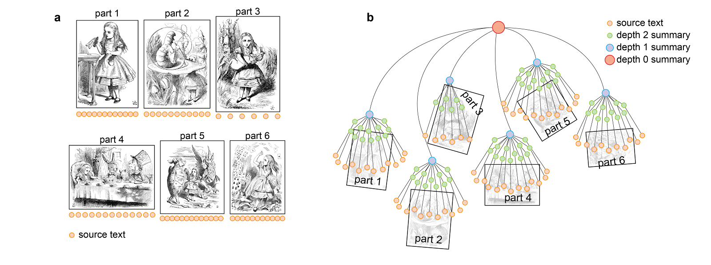
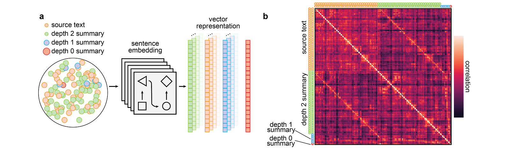
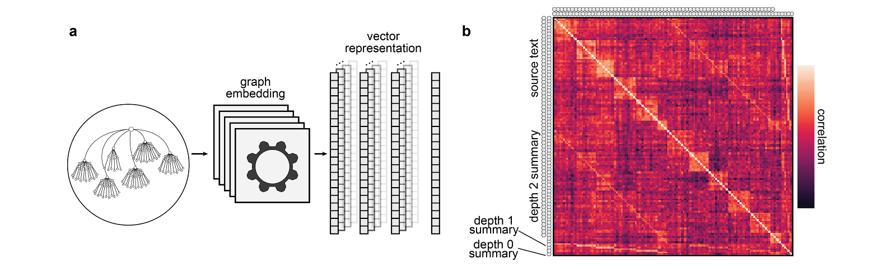

minimalpriora spinoff |
Updated | ||
|---|---|---|---|
| Author | Jan Kirchner | ||
Meta: As this post is all about summarization (and since I
value your time!), I’m experimenting with putting a
one sentence
summary _ `` at the
beginning of each paragraph. Let me know if you hate this in the
comments._
There is a curious asymmetry in how difficult it is to make something versus how easy it is to evaluate it.
After working on an idea for a couple of days, I usually run my work
by a friend or1
colleague once I think I have found a solution. More often
than not, said colleagues manage to find a flaw in my argument in 5
minutes. While I can’t deny that some of them are smarter than me,
they are not smart enough to do the same amount of mental
work in 5 minutes that took me several days. They are no clones
of John von Neumann2.
We might leverage that asymmetry for AI Alignment.
This asymmetry pops up all over the place, sometimes making life better,
sometimes making it worse,
and sometimes driving
computer scientists into madness. Nassim Taleb has written severalbooks
about it. And it also sits at the heart of a specific family of proposals
for how we might control an artificial intelligence that is smarter
than us: Perhaps we can set the AI up in a way that we have the
asymmetry on our side? Then we might be able to steer the AI (even
though it is a lot smarter than us) and use its smarts to achieve a
positive outcome for all of humanity. That would be great.
For this strategy to work we need to
_ decompose_
complex tasks. But
it turns out that a critical property for these proposals to
work out is that we can decompose tasks into simpler
subtasks. It is an empirical question whether this is possible in
general, and some initial
results looked a bit discouraging3.
But there is also more recent research on “Recursively Summarizing
Books with Human Feedback” that looks more encouraging4.
What is this proposal, and why is it encouraging? I’m glad you
ask.
Summarizing books is an instructive test case.
Reading an entire book and summarizing its content is hard
work and costs time, so it would be fantastic if we could get
someone else to do it for us. But how can we trust someone to do a
good job at the summary? How do we know they are not leaving out
important things or that the resulting summary is completely
decoupled from the original text5?
There is a natural, recursive strategy for summarization.
Fortunately, summarizing text can be broken down into simpler
subtasks. To generate a summary of a book, generate a summary of all
the chapters and then combine those. To generate a summary of a
chapter, generate a summary of all the paragraphs and then combine
those. To generate a summary of a paragraph, take all the sentences
and smush them together hard until they look summary-y6.
 Figure 1. (a) The story “Alice in Wonderland” is split into six parts. The orange dots represent passages of approximately equal length from the source text. Illustration in the background from John Tenniel. (b)Recursive summarization of Alice in Wonderland from OpenAI.
Once decomposed, each subtask is easier to verify.
The aforementioned asymmetry shows up at each summarization step,
which is cumbersome to do but relatively easy to verify :
it’s not too much work to read a few sentences and to see if the
summary is reasonably accurate. The hope is now that perhaps we can
amplify the asymmetry and find some scalable method for
verifying one step of summarization. If we’re able to verify (or
steer) the steps at scale, then every sub-task will be solved
accurately, and also the summary of the entire book ends up being
accurate.
Reward modeling is a scalable technique for verification.
“Recursively Summarizing
Books with Human Feedback” demonstrates that “reward modeling” can do
the trick. We can capture human preferences for one summary over
another in a reward model, serving as a target for the summarization
process. The result is a collection of pretty good summaries of hundreds
of books, produced by repeatedly breaking down the summarization
task into simpler subtasks. Pretty nifty, right?
Summarization is idempotent and books are highly structured.
Well, of course there are caveats. As alluded to above, summarising
books lends itself well to decomposition7.
This is due to two factors:
As a consequence, we can solve each step of the process with the
same operation, summarize(), and there is a
natural order in which we can decompose the book
(book -> chapters -> paragraphs -> sentences).
Decomposition might be difficult in general.
Can we hope to find a decomposition in general? There is a strong
case that nothing fundamentally complex exists.
Complexity is in the map,
not the territory. Everything can be neatly decomposed
into disjoint pieces or dissolved whenever the original
thing is confused. However, before we know how to
decompose something into its constituents correctly, we can get very
confused about how it works8.
Debate as one proposal for automatic decomposition.
Consequently, finding the correct lens for zooming in,
and uncovering the correct way to decompose a problem, is
non-trivial. One proposal for producing correct problem
decompositions is debate, where the
components of an argument are exposed through adversarial probing.
It seems, however, that some rather
sticky issues persist. Also, people tend to be
kind of bad at evaluating arguments. Decomposition through
debate is not looking too promising right now.
Debate in real-life cannot robustly decompose problems.
In retrospect, perhaps we shouldn’t be surprised. Real
debates kind of suck. Something akin to debate led the ancient
Greeks to believe that everything is
water and medieval scholars to think that fire is made from phlogiston
and to ponder the number
of angels on the tip of a needle. A debate doesn’t correctly
leverage the asymmetry between building and criticizing. In
particular, a particularly
convoluted argument is too hard to disprove.
Scientific inquiry as a robust technique for decomposition.
There is, of course,
another way of looking at this. We do have a much more
robust method for decomposing problems: scientific inquiry. Half of
the research process is about finding
the question. Similarly, the hard part of proving a complicated
mathematical theorem is seeing why it has to be true;
often, writing the proof can be almost mechanic. If we could
automate scientific inquiry, we might get to a point where we can
reliably discover appropriate decompositions of
problems.
Automating scientific inquiry is hard.
Just saying “science!” is easy, of course. While we have great tools for
automating debates, we do not
even have a clear idea of what the scientific method
actually looks like. Most knowledge about science is
implicit, and an unhealthy
admiration of serendipity pervades academia. I have
some
ideas
for automating parts of the research process, but the core of the
problem eludes me9.
A decomposition has semantics and syntax.
But I do have a trace of an idea. The first observation is
that there is something like semantics
and syntax of a decomposition. The semantics is the content of
the decomposition, and the syntax is the structure that ties the
content together. The second observation is that for a
successfully decomposed task, the semantic interplay of the
individual components mirrors the structure in which they are
arranged.
Okay, I realize that probably makes almost no sense. Let’s look at an example.
Semantic component of a decomposition.
We take the decomposed story of Alice in Wonderland as a starting
point. We want to ignore the decomposition structure for a second
and just focus on the resulting text. In this Figure, I illustrate
how I took the separate pieces of the source text and the summaries,
embedded them in a high-dimensional vector space, and computed the
similarity between all the components.
 Figure 2: (a) Passing the paragraphs of the original text and the intermediate and final summaries (left) through a sentence embedding model (middle; all-mpnet-base-v2) to obtain high-dimensional vector representations (right; 768 dimensions). (b) Correlation matrix of sentence embeddings of different parts of the recursive summarization process.
The resulting correlation matrix is clearly not random. For one, there are blocks of high correlation along the diagonal, which stem from the fact that paragraphs nearby in the text tend to share semantic features10.
Another observation is that there are two highly correlated off-diagonals indicating the similarity of the depth two summary and the source text. There is also a much fainter set of four additional diagonals indicating the similarity between the depth one summary and multiple portions of the depth two summaries. The depth zero summaries should correlate with everything , but it’s tough to see because it is just a single row and column.
Syntactic component of the decomposition.
Now comes the kicker. Instead of focusing on the resulting text, we
might also exclusively focus on the resulting structure of
the decomposition. In this Figure, I illustrate how I took the tree
decoupled from the text, embedded the nodes in a high-dimensional
vector space, and computed the similarity between all the
components.
 Figure 3: (a) Passing the graph structure of the summarization process (left) through a graph embedding model (middle; GGVec) to obtain high-dimensional vector representations of the nodes (right; 30 dimensions). (b) Correlation matrix of node embeddings of different parts of the recursive summarization process.
I won’t have to repeat the spiel of the previous paragraph. You can see that there is again clearly a pattern and that this pattern looks a lot like the pattern from the previous figure. This is what I mean when I say that semantic and syntactic structure match: The way that the tree’s nodes relate to each other resembles how the different pieces of text relate to each other. This observation might be trivially true, but (I hope) it’s trivially true in an interesting way11.
And then, a cliffhanger… What does
this buy us? I don’t have a great answer to that question yet12.
I’m running a bunch of experiments on this idea to see what it can
do, but it’ll take a bit more time to process. But since my posts
have been getting pretty long recently, and in the spirit of “building in
public,” I’m putting this out there anyway. I’ll update you when
I learn more!
Subscribe
Not an XOR!
Or, if they are, I would be shocked that the topic never came up during lunch before.
Some people also argue that we have to be even more thoughtful in leveraging the asymmetry because it’s not enough to control the AI - we also have to control it robustly.
Yey humanity!
A while ago, I experimented with recursively summarizing a research paper of mine, and the resulting top-level summary was talking a lot about owls. There is no mention of owls in my paper, except in one sentence towards the end.
I apologize for this abuse of language, but I could not resist.
I’m not sure if it is only evident in hindsight that summarization should work well.
I am ~60% sure that Scott Garrabrant’s work on finite factored sets is relevant here, but I am confused about how exactly. Okay, actually, make that ~30%.
It’s a hard problem.
I’m arranging the rows and columns of the correlation matrix to follow the story’s sequential ordering.
I had a whole section on Wittgenstein’s picture theory of language and on the relationship between syntax and semantics in mathematical logic sketched out, but it’s late, and who am I kidding.
Ideally, the distinction between semantics and syntax of decompositions will allow us to automate the process of decomposing. I’m thinking of a type of EM algorithm that iteratively proposes a hierarchical clustering of elements, attempts a decomposition, compares semantics and syntax, and proposes a new hierarchical clustering. But I’m pretty sure this is not how it’ll work.